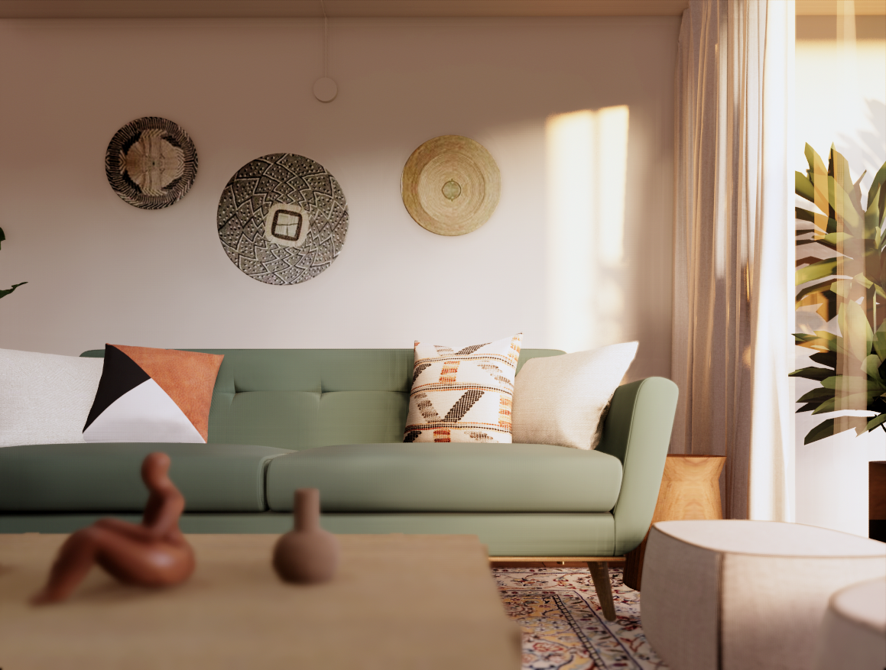
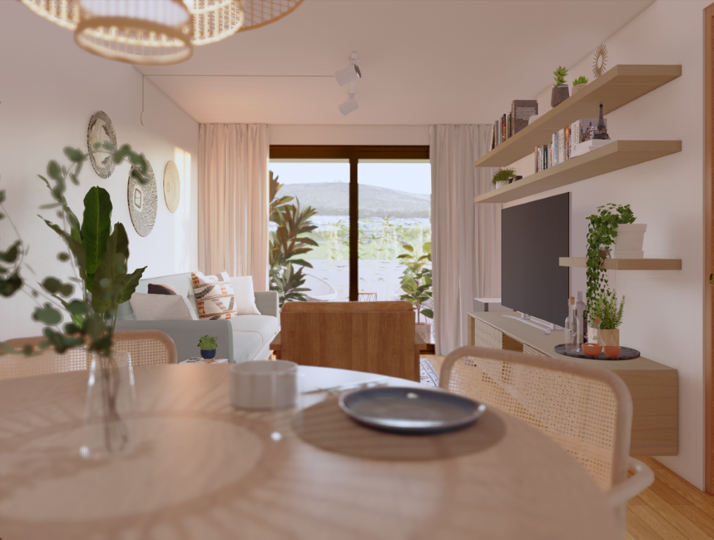
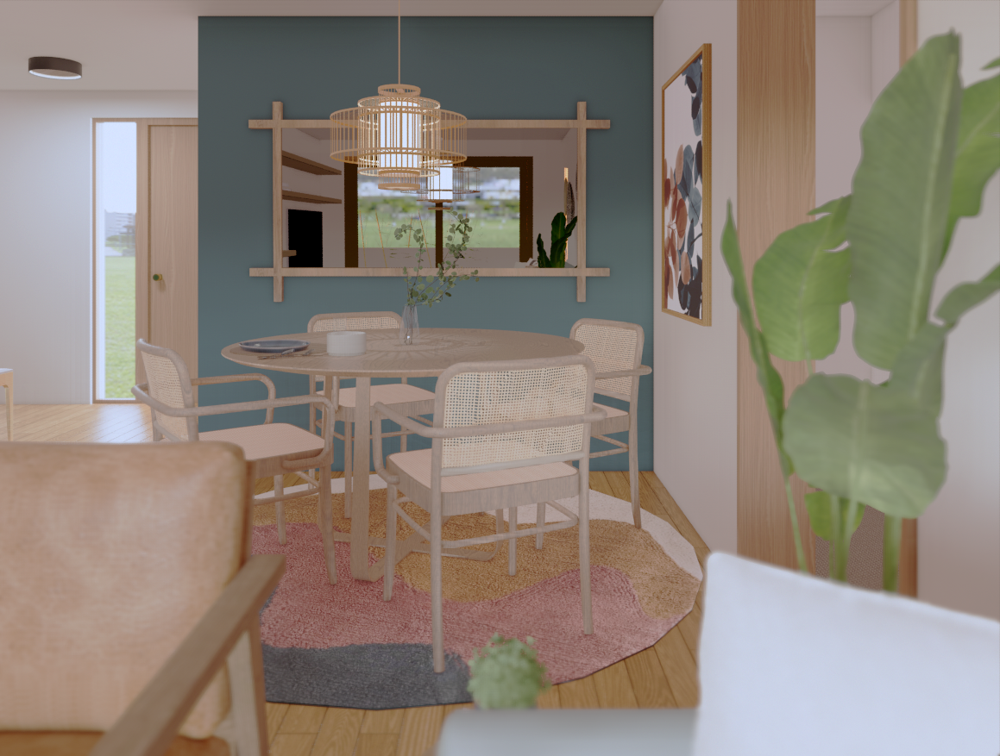
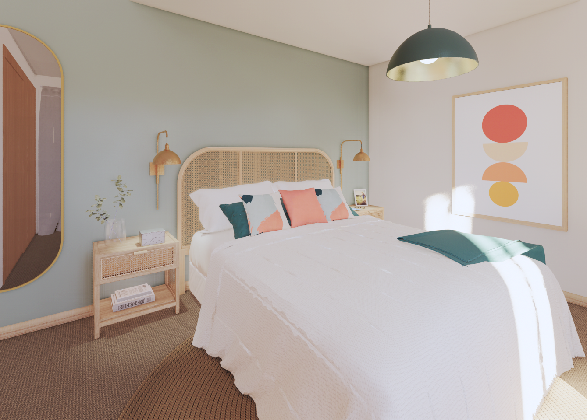
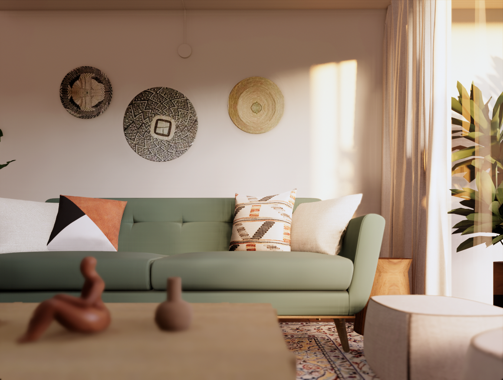
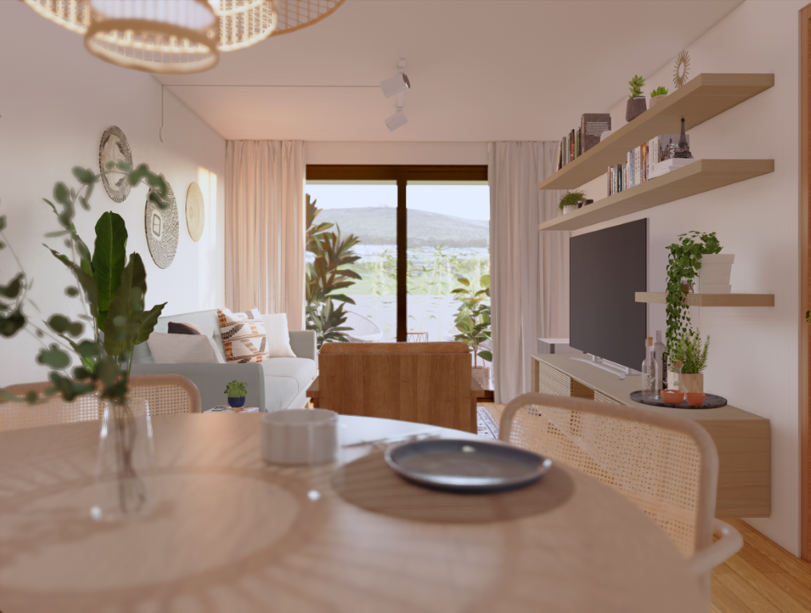
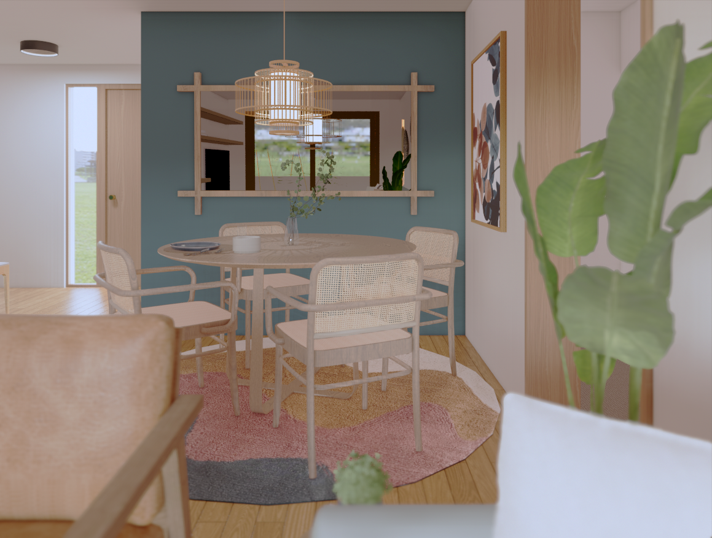
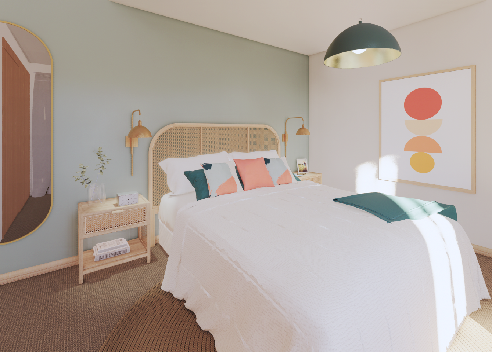

EDERA
Interior design for a couple who enjoy living close to nature. The goal was to bring the outdoors inside, creating a warm and organic atmosphere. The use of earthy tones, natural fabrics, and noble materials reinforces this concept and enhances the connection with nature.
 






